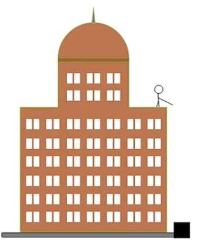
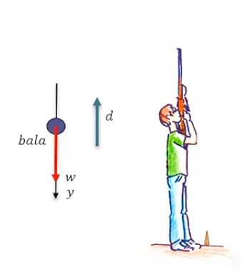
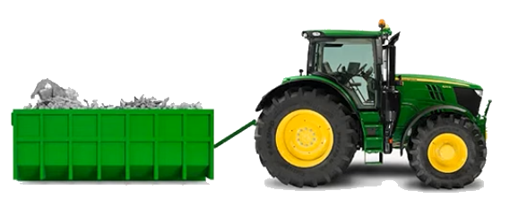
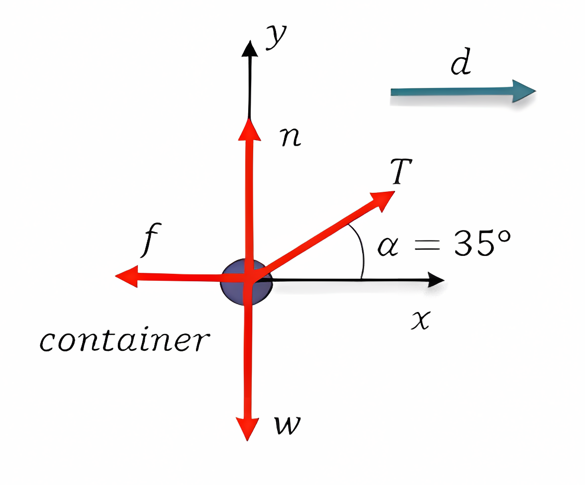
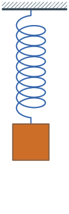
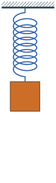
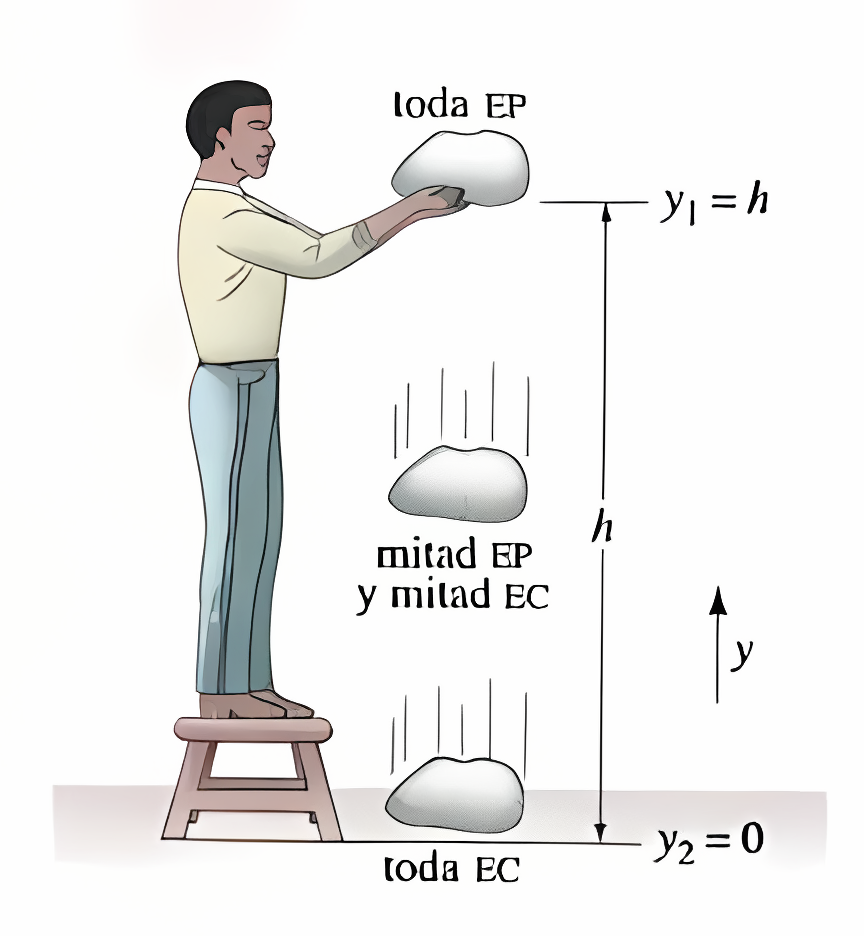
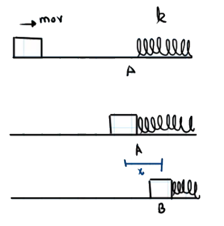

El teorema del trabajo y la energía cinética establece que el trabajo neto realizado sobre un objeto es igual al cambio en su energía cinética. Matemáticamente, se expresa como: W_{neto} = \Delta EC = EC_f - EC_i
Esto implica que el trabajo se puede calcular de dos maneras:
Utilizando la fórmula del trabajo: W = F \cdot d \cdot \cos(\theta)
Utilizando el cambio en la energía cinética.
Una caja se 5 kg se deja caer desde la terraza de un edificio de 20 m sin sufrir resistencia del aire apreciable. a) ¿Cuál es el trabajo realizado por la gravedad durante su desplazamiento desde la terraza al piso? b) ¿Cuál es la energía cinética de la caja justo antes de alcanzar el piso? c) ¿Cuál es la velocidad de la caja en ese punto? d) Conceptualmente, ¿Qué respuesta cambiaría si hay resistencia del aire?

El trabajo realizado por la gravedad se calcula como: W = F \cdot d \cdot \cos(\theta)
Ya que la dirección de la fuerza de gravedad es vertical y el desplazamiento también es vertical, el ángulo () es 0 grados, por lo que ((0) = 1). La fuerza de gravedad es ( F = m g ) y la distancia ( d ) es la altura del edificio. Sustituyendo los valores: W = m \cdot g \cdot h Donde: W = 5 \, \text{kg} \cdot 9.81 \, \text{m/s}^2 \cdot 20 \, \text{m} = 981 \, \text{J}
La energía cinética justo antes de alcanzar el piso se calcula utilizando la fórmula: EC = \frac{1}{2} m v^2 Dado que el trabajo realizado por la gravedad se convierte en energía cinética, podemos igualar el trabajo al cambio en la energía cinética: W = EC_f - EC_i Dado que la caja parte del reposo, ( EC_i = 0 ), por lo que: EC_f = W = 981 \, \text{J}
Para encontrar la velocidad justo antes de tocar el piso, utilizamos la fórmula de la energía cinética: EC = \frac{1}{2} m v^2 Despejando ( v ): v = \sqrt{\frac{2 \cdot EC}{m}} Sustituyendo los valores: v = \sqrt{\frac{2 \cdot 981 \, \text{J}}{5 \, \text{kg}}} = \sqrt{392.4} \approx 19.8 \, \text{m/s}
Si hay resistencia del aire, el trabajo realizado por la gravedad sería menor, ya que parte de la energía se disiparía en forma de calor debido a la fricción con el aire. Esto resultaría en una menor energía cinética justo antes de tocar el piso y, por lo tanto, una velocidad final menor.
Se lanza una bala de 1N hacia arriba con un rifle y su velocidad cuando va a 20m desde el piso es de 20m/s. Calcular con el teorema del trabajo y la energía a) ¿cuál es su velocidad inicial? b) ¿Cuál es su altura máxima?

Para encontrar la velocidad inicial de la bala, utilizamos el teorema del trabajo y la energía. El trabajo realizado por la fuerza de gravedad al subir es igual al cambio en la energía cinética. El trabajo realizado por la gravedad es: W = F \cdot d \cdot \cos(\theta) Igual que antes, la fuerza de gravedad es ( F = m g ) y la distancia ( d ) es la altura desde el punto de lanzamiento hasta el punto donde se mide la velocidad (20 m). El trabajo realizado por la gravedad es negativo porque la fuerza de gravedad actúa en dirección opuesta al desplazamiento: W = -m \cdot g \cdot h
Recordemos que el trabajo también se puede expresar como el cambio en la energía cinética: W = EC_f - EC_i
Por lo que igualando las dos expresiones: -m \cdot g \cdot h = \frac{1}{2} m v_f^2 - \frac{1}{2} m v_i^2 Podemos cancelar la masa m de ambos lados, ya que es constante: -g \cdot h = \frac{1}{2} v_f^2 - \frac{1}{2} v_i^2
Si tomamos la velocidad final $ v_f = 20 , $ y la altura h = 20 \, \text{m}, podemos despejar la velocidad inicial v_i: -g \cdot h = \frac{1}{2} v_f^2 - \frac{1}{2} v_i^2 Despejando v_i: v_i = \sqrt{v_f^2 + 2gh} Sustituyendo los valores: v_i = \sqrt{(20 \, \text{m/s})^2 + 2 \cdot 9.81 \, \text{m/s}^2 \cdot 20 \, \text{m}} v_i = 28.15 \, \text{m/s}
Para encontrar la altura máxima, utilizamos el hecho de que en el punto más alto la velocidad es cero. Por lo tanto, podemos usar la energía cinética inicial y el trabajo realizado por la gravedad para encontrar la altura máxima. Podemos usar la misma igualdad que antes, pero ahora con v_f = 0:
-m \cdot g \cdot h_{max} = \frac{1}{2} m v_f^2 - \frac{1}{2} m v_i^2 Cancelando la masa m: g \cdot h_{max} = \frac{1}{2} v_i^2 Despejando h_{max}: h_{max} = \frac{v_i^2}{2g}
Sustituyendo los valores: h_{max} = \frac{(28.15 \, \text{m/s})^2}{2 \cdot 9.81 \, \text{m/s}^2} h_{max} = 40,39 \, \text{m}
Un tractor arrastra un container con escombros 20m aplicando una fuerza de 6000N a 35° respecto a la horizontal. El container con la carga pesa 30000N, la fuerza de fricción entre el container y el piso es de 3000N y su velocidad inicial es de 0 m/s a) ¿Cuál es la velocidad del container cuándo este se encuentra a 20m del origen?

Identifiquemos todas las fuerzas que actúan sobre el container:

Por lo tanto, el trabajo total realizado sobre el container es la suma del trabajo realizado por la fuerza de tracción y el trabajo realizado por la fuerza de fricción: W_{total} = W_{F_x} - W_f + W_N + W_{ F_y } - W_P El trabajo realizado por la fuerza de tracción en la dirección del movimiento es: W_{F_x} = F_t \cdot d \cdot \cos(\theta) W_{F_x} = 6000 \, \text{N} \cdot 20 \, \text{m} \cdot \cos(35°) W_{F_x} = 98,3 \, \text{kJ}
El trabajo realizado por la fuerza de fricción es: W_f = F_f \cdot d W_f = 3000 \, \text{N} \cdot 20 \, \text{m} \cdot \cos(180°) W_f = -60 \, \text{kJ} El trabajo realizado por la fuerza normal y el peso del container no realizan trabajo en la dirección del movimiento, por lo que sus trabajos son cero: W_N = 0 W_P = 0 W_{F_y} = 0
Por lo tanto, el trabajo total realizado sobre el container es: W_{total} = W_{F_x} - W_f + W_N + W_{ F_y } - W_P W_{total} = 98,3 \, \text{kJ} - 60 \, \text{kJ} + 0 + 0 - 0 W_{total} = 38,3 \, \text{kJ}
Ahora, utilizando el teorema del trabajo y la energía, podemos relacionar el trabajo total con el cambio en la energía cinética: W_{total} = \Delta EC = EC_f - EC_i Dado que la velocidad inicial es 0 m/s, la energía cinética inicial es: EC_i = 0 Por lo tanto, la energía cinética final es igual al trabajo total: EC_f = W_{total} = 38,3 \, \text{kJ} Para encontrar la velocidad final del container, utilizamos la fórmula de la energía cinética: EC_f = \frac{1}{2} m v^2
Despejando la velocidad v: v = \sqrt{\frac{2 \cdot EC_f}{m}} Donde la masa del container se puede calcular a partir de su peso: m = \frac{F_p}{g} = \frac{30000 \, \text{N}}{9.81 \, \text{m/s}^2} \approx 3058.1 \, \text{kg} Sustituyendo los valores: v = \sqrt{\frac{2 \cdot 38,3 \cdot 10^3 \, \text{J}}{3058.1 \, \text{kg}}} = 5.0 \, \text{m/s}
Un sistema conservativo es aquel en el que la energía mecánica total (suma de energía cinética y potencial) se conserva. En estos sistemas, el trabajo realizado por las fuerzas conservativas (como la gravedad) no depende de la trayectoria seguida, sino solo de los puntos inicial y final.

En contraste, un sistema no conservativo es aquel en el que la energía mecánica total no se conserva debido a la presencia de fuerzas no conservativas (como la fricción o la resistencia del aire). En estos sistemas, el trabajo realizado por las fuerzas no conservativas depende de la trayectoria seguida y puede transformar energía mecánica en otras formas de energía (como calor).

En un sistema conservativo, la energía mecánica total se conserva: E_M = EC + EP = \text{constante} \Delta E_M = \Delta EC + \Delta EP = 0
En un sistema no conservativo, la energía mecánica total no se conserva: \Delta E_M = \Delta EC + \Delta EP \neq 0 Usualmente, la energía se disipa gracias a la fricción o la fuerza de un resorte: \Delta E_M = W_{nc}
Si la altura original de la roca en la figura es Y_1= h = 3\, \text{m}, calcule la rapidez de la roca cuando va a 1.0 m sobre el suelo y la velocidad con la cual impacta el suelo.

Para resolver este problema, utilizaremos el principio de conservación de la energía mecánica. La energía mecánica total en el punto más alto (cuando la roca está a 3 m) se convierte en energía cinética y potencial cuando la roca está a 1 m sobre el suelo.
La energía mecánica total al inicio es la suma de la energía potencial gravitacional y la energía cinética. Al inicio, la roca está en reposo, por lo que su energía cinética inicial es cero: E_{M_i} = EP_i + EC_i = mgh + 0 = mgh
Cuando la roca está a 1 m sobre el suelo, la energía mecánica total es: E_{M_f} = EP_f + EC_f = mgh_f + \frac{1}{2} mv_f^2 Ya que la energía mecánica se conserva, podemos igualar las dos expresiones: mgh = mgh_f + \frac{1}{2} mv_f^2 Simplificando las masas m gh = gh_f + \frac{1}{2} v_f^2
Despejando la velocidad final v_f: v_f = \sqrt{2g(h - h_f)} Sustituyendo los valores: v_f = \sqrt{2 \cdot 9.81 \, \text{m/s}^2 (3 \, \text{m} - 1 \, \text{m})} La velocidad final de la roca cuando está a 1 m sobre el suelo es: v_f = 6.26 \, \text{m/s}
Para encontrar la velocidad de impacto cuando la roca toca el suelo, repetimos el proceso considerando que la altura final es 0 m: v_{impacto} = \sqrt{2g(h - 0)} Sustituyendo los valores: v_{impacto} = \sqrt{2 \cdot 9.81 \, \text{m/s}^2 (3 \, \text{m} - 0)} v_{impacto} = \sqrt{58.86} \approx 7.67 \, \text{m/s}
Un cuerpo de 10kg choca contra un resorte de 250N/m, si el bloque comprime al resorte 14cm a partir de su posición de reposo y \mu=0.25, calcular la velocidad en el instante del choque. La energía potencial elástica del resorte se calcula como: EP_{el} = \frac{1}{2} k x^2

Hay trabajo no conservativo en este sistema, ya que hay fricción entre el bloque y el resorte. El trabajo no conservativo se puede expresar como: W_{nc} = \Delta EC + \Delta EP En este ejercicio no hay cambio en la energía potencial gravitacional, ya que el resorte no se mueve verticalmente.
Nosotros elegimos los puntos inicial y final, ya que queremos saber la velocidad en el choque, nos conviene que sea la inicial, podemos elegir el punto final como el momento en que el resorte está comprimido 14 cm. Al inicio no hay energía potencial, y al final no hay movimiento, por lo que la energía cinética es cero, pero si hay energía potencial elástica del resorte: W_{nc} = \frac{1}{2} k x^2 - \frac{1}{2} m v^2
El trabajo no conservativo sería la fricción: W_{nc} = f_r \cdot d \cdot \cos(\theta) W_{nc} = \mu \cdot m \cdot g \cdot d \cdot \cos(180°) W_{nc} = -\mu \cdot m \cdot g \cdot d W_{nc} = -0.25 \cdot 10 \, \text{kg} \cdot 9.81 \, \text{m/s}^2 \cdot 0.14 \, \text{m} W_{nc} = -3.43 \, \text{J}
W_{nc} = \frac{1}{2} k x^2 - \frac{1}{2} m v^2
Ya que queremos saber la velocidad en el instante del choque, podemos despejar v: \frac{1}{2} m v^2 = \frac{1}{2} k x^2 - W_{nc} v = \sqrt{\frac{k x^2 - 2 W_{nc}}{m}} Sustituyendo los valores: v = \sqrt{\frac{250 \, \text{N/m} \cdot (0.14 \, \text{m})^2 - 2 \cdot (-3.43 \, \text{J})}{10 \, \text{kg}}} = 1.08